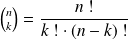
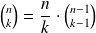
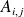
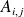
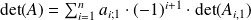

Exemples classiques de fonctions récursives
Calcul du coefficient binomial

Programmer le calcul de ce coefficient est un classique des épreuves orales. Mais l'emploi des factorielles peut vite encombrer la mémoire vive de l'ordinateur.
Question
Programmer une version naïve de ce calcul, puis en chercher une version récursive.
L'astuce pour la version récursive est d'utiliser la relation  .
Version naïve
import math as m
def binome(n, k):
return(m.factorial(n) / (m.factorial(k) * m.factorial(n - k)))
J'ai utilisé la fonction factorial() du module math.
Version récursive
def binom(n, k) :
'''Calcul optimise du coefficient binomial (n k) selon le schema recursif suivant : (n k) = n/k . (n-1 k-1)'''if k == 0 :
# cas de basereturn(1)
else :return( (n / k) * binom(n - 1, k -1) )
Complément :
Voici un exemple de sujet d'oral de mathématiques de Centrale-Supélec utilisant ce type d'algorithme : Sujet oral PC 2015.
Calcul du déterminant d'une matrice carrée
Il existe plusieurs méthodes pour calculer le déterminant d'une matrice de taille
 . L'une d'elle opère à l'aide de
déterminants de matrices de taille
obtenues en enlevant à la matrice de départ une ligne et une colonne. Si
est la matrice, pour tout
. L'une d'elle opère à l'aide de
déterminants de matrices de taille
obtenues en enlevant à la matrice de départ une ligne et une colonne. Si
est la matrice, pour tout
 et
, on note

la matrice obtenue en enlevant à
sa i-ième ligne et sa j-ième colonne.
et
, on note

la matrice obtenue en enlevant à
sa i-ième ligne et sa j-ième colonne.
Question
Développer le calcul du déterminant d'une matrice carrée selon la première colonne.

Le développement suivant une ligne ou une colonne permet d'organiser plus clairement les calculs mais ne diminue en rien le nombre de produits à effectuer.
Question
Écrire une fonction qui reçoit en argument une matrice carrée, un indice de ligne et un indice de colonne, et qui renvoie la matrice obtenue en ôtant à la matrice passée en argument sa i-ème ligne et sa j-ième colonne.
Il est avantageux ici d'utiliser la technique du slicing pour les séquences.
def Mat_Mineur(A, li, col):
'''renvoie la matrice obtenue à partir de A en lui enlevant sa ligne 'li' et sa colonne 'col'. Toutes les matrices sont de type liste de listes.'''return([L[:col] + L[col + 1 :] for L in A[: li] + A[li + 1 :]])
Question
En déduire une fonction Python récursive calculant le déterminant d'une matrice carrée .
Écrire la relation précédente avec les us des indices dans Python, qui démarrent à zéro et non à un.
def determinant(A) :
'''calcule le déterminant de A de manière récursive. A est une liste de listes 'carrée'.'''if len(A) == 1 :
# cas de basereturn (A[0][0])
else : # variant : len(A)_kreturn ( sum( [A[li][0] * pow(-1, li) * \
determinant( Mat_Mineur(A, li, 0) ) for li in range(len(A))] ) )
Complément : DS2 de mathématiques des PSI1
Ces deux questions auraient pu s'ajouter au sujet suivant.
La petite question d'informatique était dans la partie II question 6.
Merci à Jean-Jacques Mallet et à Catherine Reynaert, professeurs de mathématiques des PSI1 & 2 pour leur version du sujet et pour leur corrigé.